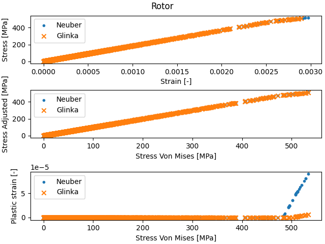
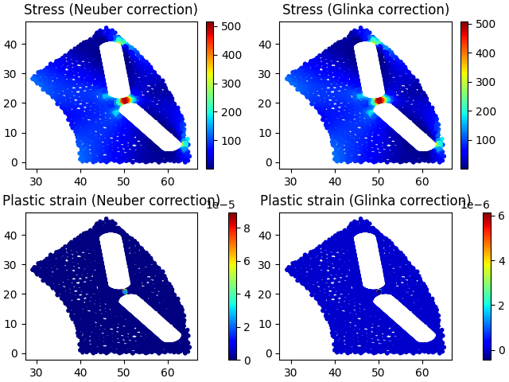

Note
Go to the end to download the full example code.
Motor-CAD Stress post-processing example script#
This example provides post-processing for Motor-CAD rotor stress results. The stress results are loaded, and estimates for non-linear stress and strain results are calculated from Motor-CAD’s linear stress results using the Neuber and Glinka correction methods.
Perform required imports#
import math
import pathlib
import tempfile
import uuid
import matplotlib.pyplot as plt
import numpy as np
import ansys.motorcad.core as pymotorcad
Utility functions to check non-linear material data#
def check_youngs_modulus(non_linear_strain, non_linear_stress, youngs_modulus):
"""Check the initial slope of the non-linear stress strain curve matches the Young's modulus.
Parameters
----------
non_linear_strain : list or ndarray
Strain values
non_linear_stress : list or ndarray
Corresponding stress values in MPa
youngs_modulus : float
Young's modulus in MPa
Returns
-------
None
Raises
------
ValueError
If the initial slope is not consistent with the Young's modulus.
"""
initial_youngs_modulus = (non_linear_stress[1] - non_linear_stress[0]) / (
non_linear_strain[1] - non_linear_strain[0]
)
# Error if notably different
if not math.isclose(initial_youngs_modulus, youngs_modulus, rel_tol=0.01, abs_tol=0.1):
raise ValueError(
"Youngs Modulus and initial slope of non-linear data are different, "
"please check the inputs. Initial slope is "
+ str(initial_youngs_modulus)
+ " MPa "
+ "Young's modulus is "
+ str(youngs_modulus)
+ " MPa"
)
def find_divergence_point(non_linear_strain, non_linear_stress, youngs_modulus):
"""Find last point where the non-linear stress strain curve is on the linear region.
Parameters
----------
non_linear_strain : list or ndarray
Strain values
non_linear_stress : list or ndarray
Corresponding stress values in MPa
youngs_modulus : float
Young's modulus in MPa
Returns
-------
float
The last stress point in the linear range
"""
for i in range(1, len(non_linear_stress)):
if not math.isclose(
non_linear_stress[i] / non_linear_strain[i], youngs_modulus, rel_tol=0.0001
):
return non_linear_stress[i - 1]
# Return maximum stress in list if no divergence found
return non_linear_stress[-1]
Classes to store and manipulate stress and FEA data#
class Element:
"""Data for a 1st order triangular element and its associated stress and strain
Parameters
----------
tri_index : int
The triangle element index number
node_1 : int
The ID of the first node in this element
node_2 : int
The ID of the second node in this element
node_3 : int
The ID of the third node in this element
x : float
The X position in mm of the element
y : float
The Y position in mm of the element
s_x : float
The X direction stress component in MPa
s_y
The Y direction stress component in MPa
t_xy
The XY plane shear stress in MPa
sp_1
The first principal stress in MPa
sp_2
The second principal stress in MPa
svm
The Von Mises stress in MPa
u_x
The X direction displacement in mm
u_y
The Y direction displacement in mm
Attributes
----------
stress_nonlinear_neuber : float
The corrected equivalent stress using the Neuber correction in MPa.
Populated by apply_neuber_correction
strain_nonlinear_neuber : float
The corrected equivalent total strain using the Neuber correction.
Populated by apply_neuber_correction
strain_plastic_neuber : float
The plastic strain using the Neuber correction.
Populated by apply_neuber_correction
stress_nonlinear_glinka : float
The corrected equivalent stress using the Glinka correction in MPa.
Populated by apply_glinka_correction
strain_nonlinear_glinka : float
he corrected equivalent total strain using the Glinka correction.
Populated by apply_glinka_correction
strain_plastic_glinka : float
The plastic strain using the Glinka correction. Populated by apply_glinka_correction
"""
def __init__(
self, tri_index, node_1, node_2, node_3, x, y, s_x, s_y, t_xy, sp_1, sp_2, svm, u_x, u_y
):
self.tri_index = tri_index
self.node_1 = node_1
self.node_2 = node_2
self.node_3 = node_3
self.x = x
self.y = y
self.s_x = s_x
self.s_y = s_y
self.t_xy = t_xy
self.sp_1 = sp_1
self.sp_2 = sp_2
self.svm = svm
self.u_x = u_x
self.u_y = u_y
self.stress_nonlinear_neuber = 0
self.strain_nonlinear_neuber = 0
self.strain_plastic_neuber = 0
self.stress_nonlinear_glinka = 0
self.strain_nonlinear_glinka = 0
self.strain_plastic_glinka = 0
def apply_neuber_correction(self, youngs_modulus, non_linear_strain, non_linear_stress):
"""Update the Neuber correction estimates from the Von Mises stress.
Parameters
----------
youngs_modulus : float
The Young's modulus used in the linear stress calculation.
non_linear_strain, non_linear_stress : np.ndarray
Corresponding arrays of strain (ratio) and stress (MPa) for the non-linear correction.
"""
elastic_stress = self.svm
elastic_strain = elastic_stress / youngs_modulus
elastic_stress_strain_product = elastic_stress * elastic_strain
# Check input data is sensible
check_youngs_modulus(non_linear_strain, non_linear_stress, youngs_modulus)
# If on the elastic portion, just return inputs, so we don't get interpolation errors
if elastic_stress < find_divergence_point(
non_linear_strain, non_linear_stress, youngs_modulus
):
self.strain_nonlinear_neuber = elastic_strain
self.stress_nonlinear_neuber = elastic_stress
self.strain_plastic_neuber = 0
return
# Find a matching stress-strain product in the non-linear response
# (This is the Neuber correction)
non_linear_stress_strain_product = non_linear_stress * non_linear_strain
# Error if out of range:
if elastic_stress_strain_product > np.max(non_linear_stress_strain_product):
raise ValueError(
"Input too large (elastic stress strain product > maximum stress strain product in "
"non-linear data). "
"Elastic stress is "
+ str(elastic_stress)
+ ", elastic stress strain product is "
+ str(elastic_stress_strain_product)
+ ", maximum plastic stress strain product is "
+ str(np.max(non_linear_stress_strain_product))
)
# Lookup to find non-linear strain at matching stress strain product:
equivalent_non_linear_strain = np.interp(
elastic_stress_strain_product, non_linear_stress_strain_product, non_linear_strain
)
# Lookup to find non-linear stress at this strain:
equivalent_non_linear_stress = np.interp(
equivalent_non_linear_strain, non_linear_strain, non_linear_stress
)
# Find plastic strain
plastic_strain = equivalent_non_linear_strain - elastic_strain
self.strain_nonlinear_neuber = equivalent_non_linear_strain
self.stress_nonlinear_neuber = equivalent_non_linear_stress
self.strain_plastic_neuber = plastic_strain
def apply_glinka_correction(self, youngs_modulus, non_linear_strain, non_linear_stress):
"""Update the Glinka correction estimates from the Von Mises stress.
Parameters
----------
youngs_modulus : float
The Young's modulus used in the linear stress calculation.
non_linear_strain, non_linear_stress : np.ndarray
Corresponding arrays of strain (ratio) and stress (MPa) for the non-linear correction.
"""
elastic_stress = self.svm
elastic_strain = elastic_stress / youngs_modulus
elastic_stress_strain_integral = 0.5 * elastic_strain * elastic_stress
# Check input data is sensible
check_youngs_modulus(non_linear_strain, non_linear_stress, youngs_modulus)
# If on the elastic portion, just return inputs, so we don't get interpolation errors
if elastic_stress < find_divergence_point(
non_linear_strain, non_linear_stress, youngs_modulus
):
self.strain_nonlinear_glinka = elastic_strain
self.stress_nonlinear_glinka = elastic_stress
self.strain_plastic_glinka = 0
return
# Find a matching stress-strain integral in the non-linear response
# (This is the Glinka correction)
non_linear_stress_strain_integral = np.zeros(len(non_linear_stress))
for i in range(1, len(non_linear_stress)):
# This assumes that our stress strain curve starts at zero,
# and uses simple trapezium integration
non_linear_stress_strain_integral[i] = (
non_linear_stress_strain_integral[i - 1]
+ (non_linear_strain[i] - non_linear_strain[i - 1])
* (non_linear_stress[i] + non_linear_stress[i - 1])
/ 2
)
# Error if out of range:
if elastic_stress_strain_integral > np.max(non_linear_stress_strain_integral):
raise ValueError(
"Input too large (elastic stress strain integral > "
"maximum stress strain integral in non-linear data). "
"Elastic stress is "
+ str(elastic_stress)
+ ", elastic stress strain integral is "
+ str(elastic_stress_strain_integral)
+ ", maximum plastic stress strain integral is "
+ str(np.max(non_linear_stress_strain_integral))
)
# Lookup to find non-linear strain at matching stress strain integral:
equivalent_non_linear_strain = np.interp(
elastic_stress_strain_integral, non_linear_stress_strain_integral, non_linear_strain
)
# Lookup to find non-linear stress at this strain:
equivalent_non_linear_stress = np.interp(
equivalent_non_linear_strain, non_linear_strain, non_linear_stress
)
# Find plastic strain
plastic_strain = equivalent_non_linear_strain - elastic_strain
self.strain_nonlinear_glinka = equivalent_non_linear_strain
self.stress_nonlinear_glinka = equivalent_non_linear_stress
self.strain_plastic_glinka = plastic_strain
class StressRegion:
"""Data for a stressed region, including element stress data and region properties.
Attributes
----------
region_name : str
The name of the region
reg_code : int
The region identifier code from the FEA
youngs_modulus : float
The region's Young's modulus
poissons_ratio : float
The region's Poisson's ratio
elements : list of Element
List of elements that make up the region
"""
def __init__(self):
self.region_name = ""
self.reg_code = 0
self.youngs_modulus = 0
self.poissons_ratio = 0
self.elements = []
def add_element(
self, tri_index, node_1, node_2, node_3, x, y, s_x, s_y, t_xy, sp_1, sp_2, svm, u_x, u_y
):
"""Add an element to the region with results from a linear elastic calculation.
Parameters
----------
tri_index : int
The triangle element index number
node_1 : int
The ID of the first node in this element
node_2 : int
The ID of the second node in this element
node_3 : int
The ID of the third node in this element
x : float
The X position in mm of the element
y : float
The Y position in mm of the element
s_x : float
The X direction stress component in MPa
s_y
The Y direction stress component in MPa
t_xy
The XY plane shear stress in MPa
sp_1
The first principal stress in MPa
sp_2
The second principal stress in MPa
svm
The Von Mises stress in MPa
u_x
The X direction displacement in mm
u_y
The Y direction displacement in mm
"""
self.elements.append(
Element(
tri_index, node_1, node_2, node_3, x, y, s_x, s_y, t_xy, sp_1, sp_2, svm, u_x, u_y
)
)
def get_number_elements(self):
"""Return the number of elements in the region.
Returns
-------
int
Number of elements in the region.
"""
return len(self.elements)
def get_sp1(self):
"""Return the first principal stress as a list in MPa."""
result_array = []
for i in range(len(self.elements)):
result_array.append(self.elements[i].sp_1)
return result_array
def get_sp2(self):
"""Return the second principal stress as a list in MPa."""
result_array = []
for i in range(len(self.elements)):
result_array.append(self.elements[i].sp_2)
return result_array
def get_svm(self):
"""Return the Von Mises stress as a list in MPa."""
result_array = []
for i in range(len(self.elements)):
result_array.append(self.elements[i].svm)
return result_array
def get_stress_nonlinear_neuber(self):
"""Return the estimated stress with the Neuber correction as a list in MPa."""
result_array = []
for i in range(len(self.elements)):
result_array.append(self.elements[i].stress_nonlinear_neuber)
return result_array
def get_strain_nonlinear_neuber(self):
"""Return the estimated total strain with the Neuber correction as a list."""
result_array = []
for i in range(len(self.elements)):
result_array.append(self.elements[i].strain_nonlinear_neuber)
return result_array
def get_strain_plastic_neuber(self):
"""Return the estimated plastic strain with the Neuber correction as a list."""
result_array = []
for i in range(len(self.elements)):
result_array.append(self.elements[i].strain_plastic_neuber)
return result_array
def get_stress_nonlinear_glinka(self):
"""Return the estimated stress with the Glinka correction as a list in MPa."""
result_array = []
for i in range(len(self.elements)):
result_array.append(self.elements[i].stress_nonlinear_glinka)
return result_array
def get_strain_nonlinear_glinka(self):
"""Return the estimated total strain with the Glinka correction as a list."""
result_array = []
for i in range(len(self.elements)):
result_array.append(self.elements[i].strain_nonlinear_glinka)
return result_array
def get_strain_plastic_glinka(self):
"""Return the estimated plastic strain with the Glinka correction as a list."""
result_array = []
for i in range(len(self.elements)):
result_array.append(self.elements[i].strain_plastic_glinka)
return result_array
def get_x(self):
"""Return the X coordinate as a list in mm."""
result_array = []
for i in range(len(self.elements)):
result_array.append(self.elements[i].x)
return result_array
def get_y(self):
"""Return the Y coordinate as a list in mm."""
result_array = []
for i in range(len(self.elements)):
result_array.append(self.elements[i].y)
return result_array
def apply_corrections(self, non_linear_strain, non_linear_stress):
"""Update the Neuber and Glinka estimates using the Von Mises stress for all elements.
Parameters
----------
non_linear_strain, non_linear_stress : np.ndarray
Corresponding arrays of strain (ratio) and stress (MPa) for the non-linear correction.
"""
for i in range(len(self.elements)):
self.elements[i].apply_neuber_correction(
self.youngs_modulus, non_linear_strain, non_linear_stress
)
self.elements[i].apply_glinka_correction(
self.youngs_modulus, non_linear_strain, non_linear_stress
)
# In principle, we could not apply a scaling based on the corrected stresses to the
# s_x, s_y and t_xy stresses, so we have an offset to apply to account for relaxation
# following plastic strain for later load cases.
class StressRegions:
"""Data on stresses for multiple regions."""
def __init__(self):
self._regions = []
def __getitem__(self, region_number):
return self._regions[region_number]
def __setitem__(self, region_number, data):
self._regions[region_number] = data
def __len__(self):
return len(self._regions)
def add_region(self):
"""Add a new region"""
self._regions.append(StressRegion())
def get_stress_data(mc, clean_up=True):
"""Load stress data from Motor-CAD
This function should be called after the stress calculation has been carried out using
`do_mechanical_calculation`.
Parameters
----------
mc : pymotorcad.motorcad_methods.MotorCAD
The PyMotorCAD instance to use.
clean_up : bool, default True
If the temporary text file should be deleted after use.
Returns
-------
StressRegions
The stress information for all regions.
"""
# Make a temporary filename
temp_filename = pathlib.Path(tempfile.gettempdir()) / pathlib.Path(str(uuid.uuid4()) + ".txt")
# The Motor-CAD FEA file always saves with '.' as a decimal separator, independent of regional
# settings. Empty string for regions means we get all available regions
mc.save_fea_data(str(temp_filename), 0, 0, "RegCode,X,Y,Sx,Sy,Txy,Sp1,Sp2,SVM,Ux,Uy", "", ",")
# Open the file
in_file = open(temp_filename, "r")
# Read first line, second value will be length of element table (e.g. '1 41230 ElementsTable')
split_line = in_file.readline().split(sep=" ")
number_of_elements = int(split_line[1])
# Skip over 4 redundant lines (blank line, plus descriptive header)
for i in range(4):
in_file.readline()
# Start with an empty set of regions
stress_regions = StressRegions()
# Read the element data
for i in range(number_of_elements):
split_line = in_file.readline().split(sep=",")
# The region code is the 5th element, after the TriIndex, Node1, Node2 & Node3
reg_code = int(split_line[4])
# Increase the number of regions as required
while reg_code > len(stress_regions):
stress_regions.add_region()
stress_regions[reg_code - 1].add_element(
tri_index=int(split_line[0]),
node_1=int(split_line[1]),
node_2=int(split_line[2]),
node_3=int(split_line[3]),
# Note that split_line[4] is the region code, not stored per-element
x=float(split_line[5]),
y=float(split_line[6]),
s_x=float(split_line[7]),
s_y=float(split_line[8]),
t_xy=float(split_line[9]),
sp_1=float(split_line[10]),
sp_2=float(split_line[11]),
svm=float(split_line[12]),
u_x=float(split_line[13]),
u_y=float(split_line[14]),
)
split_line = in_file.readline().split(sep=" ")
# This should be the 2 XXX NodesTable line
number_of_nodes = int(split_line[1])
# Skip over 4 redundant lines (blank line, plus descriptive header)
for i in range(4):
in_file.readline()
# Read the nodal data
for i in range(number_of_nodes):
split_line = in_file.readline().split(sep=",")
# TODO: We could store this data, to get nodal average stresses later.
split_line = in_file.readline().split(sep=" ")
# This should be the 3 XXX RegionsTable line
number_of_regions = int(split_line[1])
# Skip over 4 redundant lines (blank line, plus descriptive header)
for i in range(4):
in_file.readline()
if number_of_regions > len(stress_regions):
raise ValueError("RegionsTable and element region codes do not match")
# Read the region data
for i in range(number_of_regions):
split_line = in_file.readline().split(sep=",")
this_region = int(split_line[0])
if this_region > len(stress_regions):
raise ValueError("RegionsTable and element region codes do not match")
stress_regions[this_region - 1].reg_code = this_region
stress_regions[this_region - 1].youngs_modulus = float(split_line[1])
stress_regions[this_region - 1].poissons_ratio = float(split_line[2])
stress_regions[this_region - 1].region_name = split_line[-1].strip()
# Tidy up
in_file.close()
# Delete the temp file
if clean_up:
temp_filename.unlink()
else:
print("Temporary file not deleted: " + str(temp_filename))
return stress_regions
Main script, using the classes and methods defined above#
Start Motor-CAD#
Load a template (for users this would normally be replaced by load_from_file(), and disable popup messages.
mc = pymotorcad.MotorCAD()
mc.set_variable("MessageDisplayState", 2)
mc.load_template("e9")
Run the stress calculation#
Set the shaft speed and run the mechanical stress calculation
mc.set_variable("ShaftSpeed", 15000)
mc.do_mechanical_calculation()
Read the stress data#
stress_regions = get_stress_data(mc)
Choose which regions to show data for#
region_names_to_postprocess = ["Rotor"]
Plot the elastic stress data for each region#
for region_name_to_postprocess in region_names_to_postprocess:
# Find matching regions
for i in range(len(stress_regions)):
if stress_regions[i].region_name == region_name_to_postprocess:
if stress_regions[i].get_number_elements() > 0:
fig, ax = plt.subplots(1, 2, layout="constrained", sharey=True)
ax[0].scatter(
stress_regions[i].get_sp1(), stress_regions[i].get_sp2(), marker="."
) # , c=svm)
ax[0].set_xlabel("Principal stress 1 [MPa]")
ax[0].set_ylabel("Principal stress 2 [MPa]")
ax[1].scatter(
stress_regions[i].get_svm(), stress_regions[i].get_sp1(), marker="."
) # , c=svm)
ax[1].scatter(
stress_regions[i].get_svm(), stress_regions[i].get_sp2(), marker="x"
) # , c=svm)
ax[1].legend(["Sp1", "Sp2"])
ax[1].set_xlabel("Von Mises Stress [MPa]")
ax[1].set_ylabel("Principal Stress [MPa]")
plt.suptitle(stress_regions[i].region_name)
plt.show()
Non-linear stress strain data#
Our non-linear stress-strain data, in this case for a region with Young’s modulus of 185 GPa, and with plastic deformation above 480 MPa.
non_linear_strain = np.array(
[
0,
0.0002,
0.0004,
0.0006,
0.0008,
0.001,
0.0012,
0.0014,
0.0016,
0.0018,
0.002,
0.0022,
0.0024,
0.0026,
0.0028,
0.003,
0.0032,
0.0034,
0.0036,
0.0038,
0.004,
0.0042,
0.0044,
0.0046,
0.0048,
0.005,
0.0052,
0.0054,
0.0056,
0.0058,
]
)
non_linear_stress = np.array(
[
0,
37,
74,
111,
148,
185,
222,
259,
296,
333,
370,
407,
444,
481,
500,
520,
540,
560,
570,
580,
590,
600,
605,
610,
615,
620,
625,
630,
635,
640,
]
)
Apply corrections#
Apply the Glinka and Neuber stress corrections to the regions of interest using the region’s apply_corrections method, and plot the results.
for region_name_to_postprocess in region_names_to_postprocess:
# Find matching regions
for i in range(len(stress_regions)):
if stress_regions[i].region_name == region_name_to_postprocess:
# Apply the actual stress correction here
stress_regions[i].apply_corrections(non_linear_strain, non_linear_stress)
# Print the maximum stresses and strains
print(f"For region {stress_regions[i].region_name}:")
print(f"Maximum elastic stress " f"{np.max(stress_regions[i].get_svm()):.6} MPa")
print(
f"Maximum stress with Neuber correction: "
f"{np.max(stress_regions[i].get_stress_nonlinear_neuber()):.6} MPa"
)
print(
f"Maximum stress with Glinka correction: "
f"{np.max(stress_regions[i].get_stress_nonlinear_glinka()):.6} MPa"
)
print(
f"Maximum plastic strain with Neuber correction: "
f"{np.max(stress_regions[i].get_strain_plastic_neuber()):.6}"
)
print(
f"Maximum plastic strain with Glinka correction: "
f"{np.max(stress_regions[i].get_strain_plastic_glinka()):.6}"
)
# Plot:
fig, ax = plt.subplots(3, 1, layout="constrained")
# Stress vs strain
ax[0].scatter(
stress_regions[i].get_strain_nonlinear_neuber(),
stress_regions[i].get_stress_nonlinear_neuber(),
marker=".",
)
ax[0].scatter(
stress_regions[i].get_strain_nonlinear_glinka(),
stress_regions[i].get_stress_nonlinear_glinka(),
marker="x",
)
ax[0].legend(["Neuber", "Glinka"])
ax[0].set_xlabel("Strain [-]")
ax[0].set_ylabel("Stress [MPa]")
# Plastic stress vs elastic stress
ax[1].scatter(
stress_regions[i].get_svm(),
stress_regions[i].get_stress_nonlinear_neuber(),
marker=".",
)
ax[1].scatter(
stress_regions[i].get_svm(),
stress_regions[i].get_stress_nonlinear_glinka(),
marker="x",
)
ax[1].legend(["Neuber", "Glinka"])
ax[1].set_xlabel("Stress Von Mises [MPa]")
ax[1].set_ylabel("Stress Adjusted [MPa]")
# Plastic strain vs elastic stress
ax[2].scatter(
stress_regions[i].get_svm(),
stress_regions[i].get_strain_plastic_neuber(),
marker=".",
)
ax[2].scatter(
stress_regions[i].get_svm(),
stress_regions[i].get_strain_plastic_glinka(),
marker="x",
)
ax[2].legend(["Neuber", "Glinka"])
ax[2].set_xlabel("Stress Von Mises [MPa]")
ax[2].set_ylabel("Plastic strain [-]")
plt.suptitle(stress_regions[i].region_name)
plt.show()
# Plot stress including correction, and plastic strain
# Plot against element data X and Y (check exactly what this corresponds to,
# assume element centre, but seems to be one node of triangle)
cm = plt.colormaps["jet"]
fig, ax = plt.subplots(2, 2, layout="constrained")
plot1 = ax[0, 0].scatter(
stress_regions[i].get_x(),
stress_regions[i].get_y(),
c=stress_regions[i].get_stress_nonlinear_neuber(),
marker=".",
cmap=cm,
)
plt.colorbar(plot1, ax=ax[0, 0])
ax[0, 0].set_title("Stress (Neuber correction)")
plot2 = ax[0, 1].scatter(
stress_regions[i].get_x(),
stress_regions[i].get_y(),
c=stress_regions[i].get_stress_nonlinear_glinka(),
marker=".",
cmap=cm,
)
plt.colorbar(plot2, ax=ax[0, 1])
ax[0, 1].set_title("Stress (Glinka correction)")
plot3 = ax[1, 0].scatter(
stress_regions[i].get_x(),
stress_regions[i].get_y(),
c=stress_regions[i].get_strain_plastic_neuber(),
marker=".",
cmap=cm,
)
plt.colorbar(plot3, ax=ax[1, 0])
ax[1, 0].set_title("Plastic strain (Neuber correction)")
plot4 = ax[1, 1].scatter(
stress_regions[i].get_x(),
stress_regions[i].get_y(),
c=stress_regions[i].get_strain_plastic_glinka(),
marker=".",
cmap=cm,
)
plt.colorbar(plot4, ax=ax[1, 1])
ax[1, 1].set_title("Plastic strain (Glinka correction)")
plt.show()
- 
- 
For region Rotor:
Maximum elastic stress 533.648 MPa
Maximum stress with Neuber correction: 517.419 MPa
Maximum stress with Glinka correction: 509.074 MPa
Maximum plastic strain with Neuber correction: 8.9607e-05
Maximum plastic strain with Glinka correction: 6.15387e-06
Total running time of the script: (0 minutes 19.225 seconds)